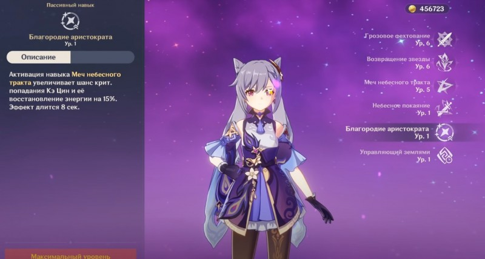
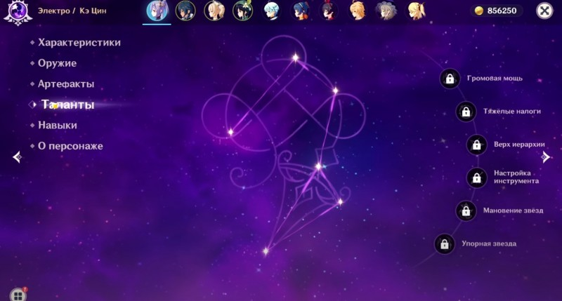
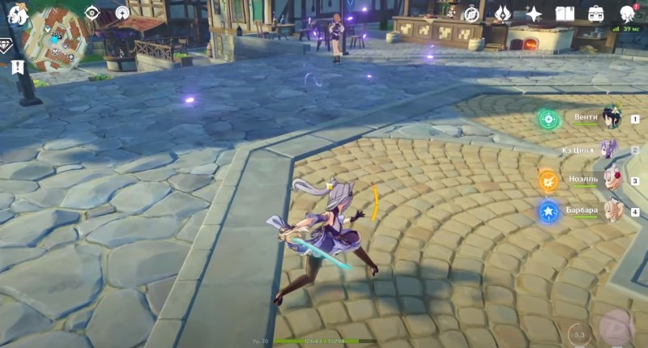

Гайд на Кэ Цин

В Genshin Impact Кэ Цин является 5-звездочным персонажем, орудующим одноручным мечом. Она способна идеально выполнять роль стихийного или физического DPS (дамагера) в команде. Если вас интересуют ее лучшие билды, а также наиболее подходящее ей оружие и артефакты, то изучите наше руководство.
Навыки Кэ Цин
Ее базовая атака называется «Грозовое фехтование» и позволяет выполнять до пяти обычных взмахов мечом. Если зарядить ее, то удастся осуществить два быстрых удара. При атаке с воздуха эта кошкодевочка устремляется к земле, нанося урон всем врагам, которые оказались на ее пути, а в конце выполняя мощный AoE-удар.
При использовании элементального умения «Возвращение звезды» Кэ Цин сможет кинуть кинжал во врага, нанеся ему Электро урон и установив метку в точке попадания. Персонаж может переместиться к этому знаку при повторном применении навыка, выполнив при этом рубящий удар. Если применить заряженную атаку, то героиня выполнит серию быстрых взмахов оружием в месте нахождения метки.
Можно также удерживать зажатой кнопку (клавишу) способности, чтобы самостоятельно выбрать место падения кинжала. Что касается ее взрыва стихии «Меч небесного тракта», то она ударяет молниями по выбранной области, нанося Электро повреждения. После этого она ударяет клинком ближайших противников.
Таким образом, Кэ Цин больше подходит не для одномоментного применения, а для долгосрочного контроля. В этом случае с помощью нее можно будет нанести огромный урон любому противнику. Что касается пассивных умений, то они выглядят следующим образом:
Небесное покаяние – при повторном использовании «Возвращения звезды» на протяжении 5 секунд в случае наличия Громового стилита все простые и заряженные удары героини начинают наносить урон электричеством.
Благородие аристократа – после применения «Меча небесного тракта» на 15 процентов повышается вероятность нанесения критического удара и восстановление энергии. Бонус накладывается на 8 секунд.
Управляющий землями – экспедиции в Ли Юэ длятся на 25 процентов меньше.
Таланты
Низкоуровневые таланты Кэ Цин неплохо повышают ее боевой потенциал, но для максимального раскрытия потребуются перки 4-го и 6-го левелов. К сожалению, для их открытия нужна удача персонажа (рандом).
Громовая мощь – при повторном применении «Возвращении звезды» героиня наносит Электро повреждения по площади, величина которых равна 50 процентам от силы атаки, в начале и конце перемещения.
Тяжелые налоги – простые и заряженные удары по противникам со статусом Электро могут привести к появлению элементальной частицы.
Верх иерархии – увеличивает уровень навыка «Меч небесного тракта» на 3.
Настройка инструмента – после использования стихийной реакции, связанной с электричеством, сила атаки персонажа возрастает на 25 процентов в течение 10 секунд.
Мановение звезд – увеличивает уровень навыка «Возвращение звезды» на 3. Упорная звезда – применение любых атак и навыков дают 6-процентный бонус к Электро урону на 8 секунд.
Как играть за Кэ Цин
Первым делом рассмотрим ее сильные и слабые стороны. К преимуществам этого персонажа можно отнести:
Молниеносные атаки можно использовать для создания стихийных реакций, наносящих огромный урон.
Удары ближнего боя просты в использовании и при этом могут нанести значительные повреждения.
Позволяет атаковать врагов, как с близкого, так и с дальнего расстояния, поэтому она идеально подходит для продолжительных сражений с разными противниками.
Впрочем, без недостатков все же не обошлось. К ним относятся:
Заряженная атака требует немного больше выносливости, чем у других героев, использующих одноручный меч.
Нужно дойти как минимум до 2-й фазы Возвышения, чтобы получить постоянный Электро урон. Прекрасно подходит для прохождения подземелий
В большинстве данжах вам предстоит сражаться с целыми ордами противников, а Кэ Цин даже среди других пользователей мечом славится невероятно быстрыми атаками, которые к тому же наносят Электро урон (всегда полезен для создания элементальных реакций). Все эти качества делают данного персонажа, пожалуй, лучшим выбором для завершения подземелий.

Драгоценный омут (5-звездочный) – повышает шкалу жизни на 20 процентов и дает бонус к атаке, который равен 1,2 проценту от максимального показателя здоровья персонажа.
Черный меч (4-звездочный) – повышает повреждения от заряженных и обычных ударов на 20 процентов. Криты восстанавливают здоровье, равное 60 процентам от силы атаки. Эффект проявляется раз в 5 секунд.
Прототип: Злоба (4-звездочный, крафтится) – при попадании простым или заряженным ударом защита и сила атаки возрастают на 5 процентов на 6 секунд. Эффект складывается до четырех раз и появляется раз в 0,3 секунды. Бюджетный вариант для Кэ Цин.
Филейное лезвие (3-звездочный, выпадает из сундуков) – дает 50-процентный шанс нанести 240 процентов урона врагу. Срабатывает раз в 15 секунд. Еще одна бюджетная альтернатива более редкому оружию.
Конец гладиатора – 2 предмета: повышают силу атаки на 18 процентов; 4 предмета: повышают повреждения от простых ударов на 35 процентов при применении копья, меча или двуручного меча. Можно добыть из элитных боссов.
Рыцарь крови – 2 предмета: повышают физический урон на 25 процентов; 4 предмета: увеличивают урон от заряженного удара на 50 процентов после убийства врага и делают его бесплатным в плане затрат выносливости на 10 секунд. Можно добыть в подземелье Чистая вода и горная пещера. Советуем вам взять 2 части Конца гладиатора и 2 части Рыцаря крови.
Берсерк – 2 предмета: повышают вероятность нанесения критов на 12 процентов; 4 предмета: если шкала здоровья персонажа упала до 70 процентов, то шанс возрастает на 24 процента. Можно найти в Храме Льва. Бюджетный вариант для Кэ Цин.
Воин – 2 предмета: повышают повреждения от заряженных и простых ударов на 15 процентов; 4 предмета: после применения элементального умения повреждения от заряженных и простых ударов возрастают на 25 процентов на 8 секунд. Можно добыть в подземелье Скрытый дворец Ву Ван. Еще один бюджетный набор.
Она также обладает стихийным навыком, который позволяет ей атаковать на расстоянии, что дает возможность игрокам быстро адаптировать ее под разные ситуации. Это также означает, что Кэ Цин не нужно полагаться на других членов отряда, так как она может сама постоять за себя.
В качестве стрелка может поражать слабые места врагов Элементальное умение дает этой кошкодевочке такое же преимущество, что и персонажам с луком. Речь идет о способности стрелять в слабые места противников. Вы сможете самостоятельно целиться в уязвимые точки и атаковать их, без необходимости переключения на лучников. С ней вы сможете без проблем охотиться на боссов и легко повышать свой ранг приключений.
Тем не менее, у стихийного навыка имеется кулдаун (время восстановления), поэтому его нельзя использовать постоянно. Кроме того, в отличие от луков, при первом выборе умения оно будет нацеливаться на врага, а стрелять только во второй раз, поэтому время атаки будет напрямую зависеть от вас.
Возвращение звезды позволяет телепортироваться Стихийное умение Кэ Цин можно использовать не только в бою, но и при исследовании мира. К примеру, вы сможете быстро взбираться на небольшие уступы, преодолевать различные препятствия и даже добираться до участков, на которые в обычном случае вам бы не удалось попасть.
Билд на повышение критов
Эта сборка основана на высоком базовом критическом уроне героини и направлена на увеличение шанса нанесения критических ударов при использовании взрыва стихии. В этом случае в качестве оружия следует взять:
Что касается артефактов, то примерьте следующие сеты: